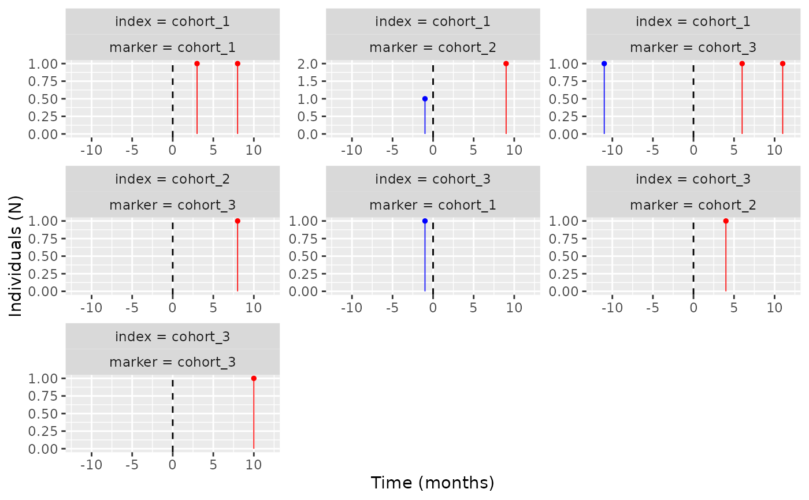

A plot for the temporal symmetry of cohorts.
Source:R/plotTemporalSymmetry.R
plotTemporalSymmetry.RdIt provides a ggplot of the temporal symmetry of two or more cohorts.
Arguments
- result
Table output from summariseTemporalSymmetry.
- plotTitle
Title of the plot, if NULL no title will be plotted.
- labs
Axis labels for the plot.
- xlim
Limits for the x axis of the plot.
- colours
Colours for both parts of the plot, pre- and post- time 0.
- scales
Whether to set free y scales for the facet wrap when there are multiple plots (i.e. each plot has its own scaled y axis) or set them equal for all. Only accepts "free" for the former and "fixed" for the latter.
Examples
# \donttest{
library(CohortSymmetry)
cdm <- mockCohortSymmetry()
cdm <- generateSequenceCohortSet(cdm = cdm,
indexTable = "cohort_1",
markerTable = "cohort_2",
name = "joined_cohort")
temporal_symmetry <- summariseTemporalSymmetry(cohort = cdm$joined_cohort,
minCellCount = 0)
#> Joining with `by = join_by(cdm_name, days_prior_observation, washout_window,
#> index_marker_gap, combination_window, timescale)`
#> ! The following column type were changed:
#> • result_id: from character to integer
#> • variable_level: from integer to character
#> • estimate_value: from integer to character
plotTemporalSymmetry(result = temporal_symmetry)

CDMConnector::cdmDisconnect(cdm = cdm)
# }